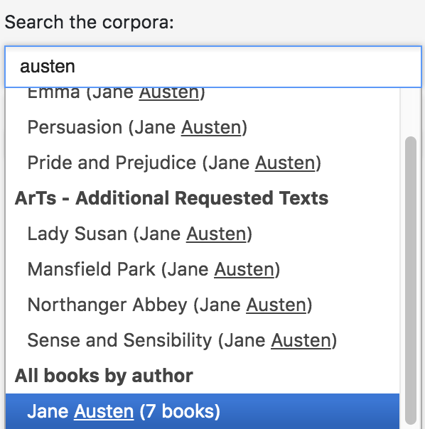
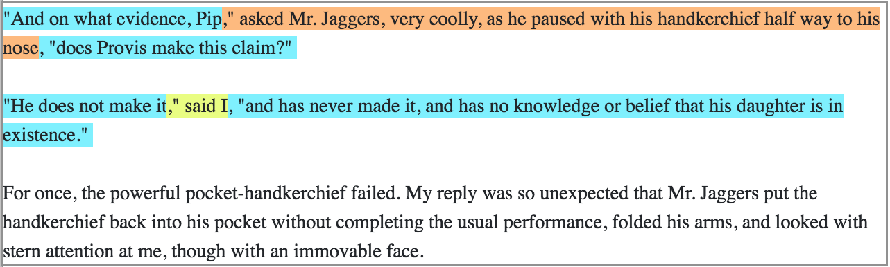
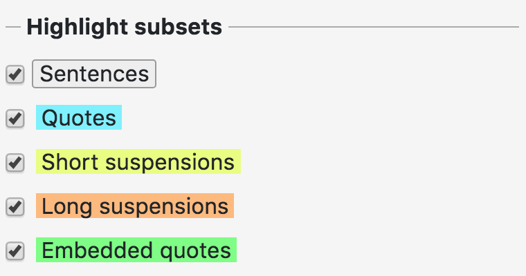
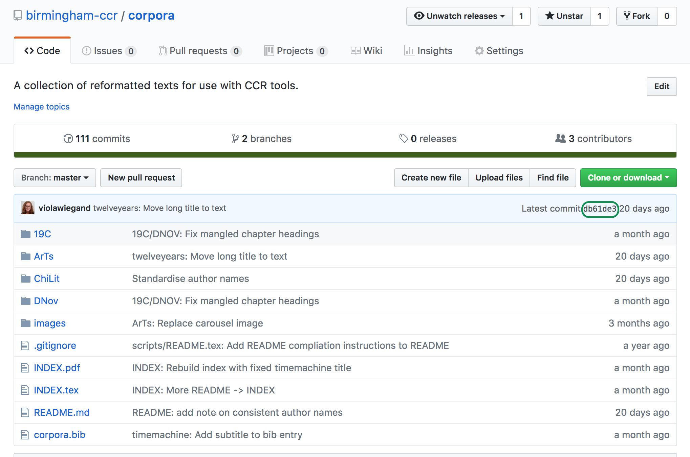
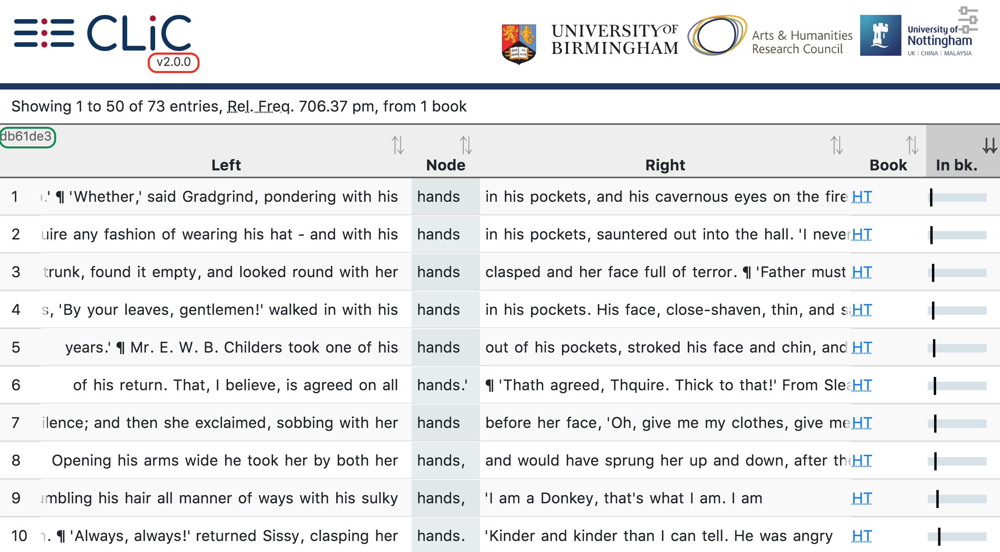

The CLiC corpora¶
CLiC contains several pre-selected corpora of novels, which can be selected individually and combined freely for analysis in any of the CLiC tools.
Available corpora¶
DNov (15 texts) – Dickens’s Novels. The complete novels of Charles Dickens.
19C (29 texts) – 19th Century Reference Corpus. A selection of 19th century novels by other authors, originally compiled as a reference corpus in comparisons with Dickens.
ChiLit (71 texts) – 19th Century Children’s Literature Corpus. Compiled by Anna Cermakova for the GLARE project.
ArTs (31 texts) – Additional Requested Texts. Includes additional GCSE and A-Level titles and other individually requested texts. This corpus was not designed to be analysed as a whole, but rather to make individual texts available in CLiC.
DE19 (33 texts) – German 19th Century Reference Corpus. Compiled in the Reading Concordances in the 21st Century project.
An overview of the texts in each corpus (with word counts) can also be generated dynamically using the Counts tab. For a full list of titles, see Appendix: Texts in CLiC and the [GitHub_corpora] repository.
Selecting texts and corpora¶
The texts can be selected individually and combined freely for analysis in any of the CLiC tools. You can also select one of the pre-selected corpora listed above. For details on how to select texts and corpora, see the Introduction and the documentation for each analysis tab.
You can also select an author-based corpus from the drop-down. For example, typing austen into the textbox (which is not case-sensitive) gives you the option of selecting all books by Jane Austen at once, as illustrated in Fig. 3.

Fig. 3 Example of creating an author-based corpus: selecting all of Jane Austen’s novels¶
Textual subsets¶
The CLiC corpora have been marked up to distinguish between several textual subsets of novels. The example from Great Expectations below illustrates the subsets:
"And on what evidence, Pip," asked Mr. Jaggers, very coolly, as he
paused with his handkerchief half way to his nose,"does Provis make
this claim?"
"He does not make it," said I, "and has never made it, and has no
knowledge or belief that his daughter is in existence."
For once, the powerful pocket-handkerchief failed. My reply was so
unexpected that Mr. Jaggers put the handkerchief back into his pocket
without completing the usual performance, folded his arms, and looked
with stern attention at me, though with an immovable face.
[Great Expectations, Chapter 51]
quotes – any text in quotation marks, i.e. mostly character speech but also thoughts or songs that might appear in quotes.
non-quotes – narration. A special case of non-quotes are suspensions, which represent narratorial interruptions of character speech that do not end with sentence-final punctuation. Suspensions are further divided by length:
short suspensions have a length of up to four words.
long suspensions have a length of five or more words.
Fig. 4 shows how the subsets are marked up in the chapter views, which can be retrieved from the ‘in bk.’ (in book) button in concordances (see the Concordance section) and the Texts tab. The “in book” view also contains a legend of the markup layers (see Fig. 5), which you can individually select and deselect.

Fig. 4 Chapter view of the example above, exemplifying the mark-up of subsets¶

Fig. 5 Example of highlighting subsets¶
The rationale behind the division of the subsets can be found in
[Mahlberg_et_al_2016]. The tagging procedure for the most recently
added corpora differs in technical implementation – see
clic.region for details.
Versioning and reproducibility¶
The procedure for retrieving, cleaning and importing texts is described in detail in the [GitHub_corpora] repository. Every change to the repository is marked with a commit number (a sequence of characters and numbers), as shown in Fig. 6.
From CLiC 2.0.0 onwards, the corpus commit number is also displayed in the CLiC interface (see Fig. 7) to indicate which version of the corpora is being used. We recommend that users record both the CLiC version number (displayed under the CLiC logo, circled in red in Fig. 7) and the corpus version (circled in green) when saving results. This ensures that any later differences in search results can be traced to specific changes in the interface or the corpora.

Fig. 6 The commit version number in the GitHub corpora repository¶

Fig. 7 The CLiC release and corpora version numbers in the CLiC interface¶
The corpora repository also contains the full text of the corpus files after any manual cleaning changes. The repository history lists all changes and links to the original versions as downloaded from Project Gutenberg for the ArTs corpus [GitHub_corpora_initial_ArTs] (note that ArTs used to be called “Other” in the repository history) and the ChiLit corpus [GitHub_corpora_initial_ChiLit].
How to cite corpora¶
When reporting results from CLiC, we recommend citing both the CLiC version and the corpus version (see Versioning and reproducibility for where to find these). A citation might look like this:
We searched for X in [corpus/corpora] using the Concordance function in CLiC 2.3 (Mahlberg et al. 2020; corpus version [number]), accessed [date].
For the general CLiC citation, see the Introduction.